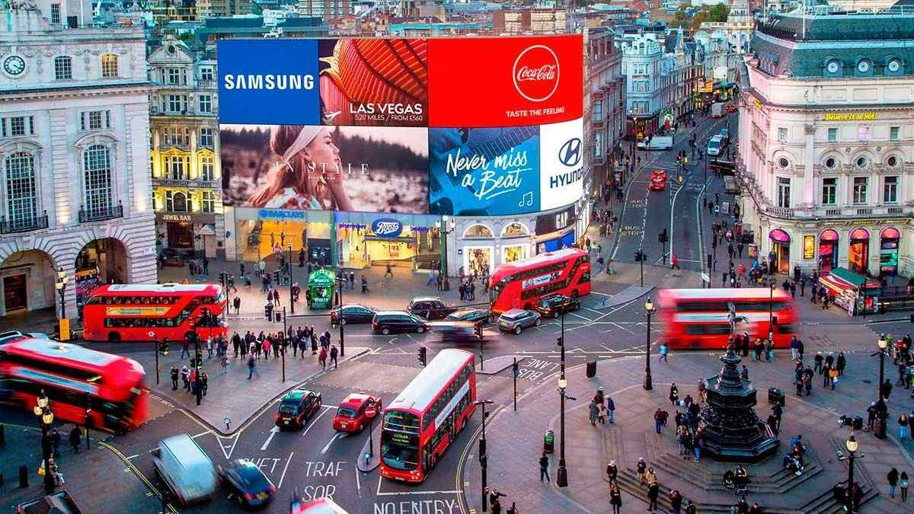

Greenwich Royal Observatory Founded
1675
King Charles II established the Royal Observatory in Greenwich, laying the foundation for modern astronomy and navigation.
View Greenwich →
1675
King Charles II established the Royal Observatory in Greenwich, laying the foundation for modern astronomy and navigation.
View Greenwich →The late 17th century saw a flourishing of empirical science. The Royal Society (founded 1660) promoted observation and experimentation, and architecture — like Wren's designs — reflected rational order and grandeur.
Historical context: The Scientific Revolution was in full swing. Newton's Principia (1687) would soon reshape the world's understanding of nature.
Impact on art: Precision, perspective, and a reverence for measurable reality informed everything from architectural draughtsmanship to landscape painting.

ca. 1754
Canaletto captures St. Paul's Cathedral in its full architectural glory — the only painting among his Thames views to focus on the entire building.
View St. Paul's →The Venetian School emphasised colour, light, and atmosphere over line and form. Canaletto's vedute (cityscape views) combined architectural precision with luminous skies, catering to British aristocrats on the Grand Tour.
Historical context: The Enlightenment celebrated reason and individual experience. Rising literacy and a booming art market created a new class of cultural consumers — merchants, gentry, and professionals who wanted souvenirs of their travels.
Impact on art: The demand for topographical accuracy merged with painterly atmosphere, transforming cityscape painting from mere documentation into a sophisticated artistic genre.

ca. 1825
J.M.W. Turner presents a sweeping panorama from Greenwich Park, juxtaposing maps, telescopes, and ships to reflect on Britain's maritime past and industrial future.
View Greenwich →Romanticism rejected Enlightenment rationalism in favour of emotion, nature, and the sublime. Turner became known as the "Painter of Light", using bold colour and atmospheric effects to evoke awe and transience.
Historical context: The Industrial Revolution had transformed Britain into the "workshop of the world". Steam power, railways, and factories reshaped the landscape — and artists grappled with both wonder and anxiety.
Impact on art: Turner's work captured the tension between nature and technology: steamships cutting through mist, the old world giving way to the new, light itself becoming a subject.

1837–1901
The Industrial Revolution reached its peak. London underwent sweeping transformation — infrastructure boomed, railways expanded, and the city emerged as a global cultural capital.
Victorian art and architecture drew from multiple historical sources — Gothic Revival, Neoclassicism, and Orientalism coexisted. The Pre-Raphaelite Brotherhood rejected academic convention in favour of medieval sincerity and vivid colour.
Historical context: The Great Exhibition of 1851 showcased British industrial might to the world. The Empire was at its zenith, and London's population exploded from 1 to 6 million.
Impact on art: Britain's global reach brought an influx of non-Western influences, while social reform movements pushed artists to confront urban poverty and the human cost of industrialisation.

ca. 1871
Two masters converged on London. Whistler painted Chelsea's riverside in delicate tonal harmonies, while Monet captured Hyde Park in shifting light — both bringing new sensibilities to the city.
View Chelsea → View Hyde Park →Whistler's Nocturnes reduced the Thames to mood and colour — a precursor to abstraction. Monet, fleeing the Franco-Prussian War, found London's fog an irresistible subject for his study of light.
Historical context: The Franco-Prussian War (1870–71) drove French artists to London. The city's infamous smog, combined with the soft Thames light, created an accidental studio for atmospheric painting.
Impact on art: London's pollution paradoxically produced beautiful effects — the "London particular" fog became a visual character in its own right, softening edges and dissolving forms.

ca. 1890
Camille Pissarro, the father of Impressionism, turned his eye to the Palace of Westminster — capturing the iconic Gothic Revival architecture through his distinctive broken brushwork.
View Westminster →By the 1890s, Impressionism had matured. Pissarro applied its principles — broken colour, visible brushstrokes, and an emphasis on changing light — to subjects beyond the French countryside, finding new life in London's urban landscape.
Historical context: The fin de siecle brought both optimism and anxiety. Urbanisation accelerated, and artists increasingly turned to the modern city as their subject — the boulevard, the bridge, the crowd.
Impact on art: Pissarro demonstrated that Impressionism was not bound to rural France — it could capture the pulse of a metropolis, the steam of trains, the haze over the Thames.

1894
On 30 June 1894, the Prince of Wales opened Tower Bridge before tens of thousands of spectators — a Victorian engineering marvel that symbolised Britain's industrial confidence at the Empire's zenith.
View Tower Bridge →Wyllie, who entered the Royal Academy at twelve, belonged to a lineage of painter-sailors who rendered every spar and pennant with naval precision. His Tower Bridge watercolour is not romantic impression but forensic document — the Prince's carriage, the flotilla, the bunting, the crowd — recording a nation whose soul was measured in ships and bridges as much as cathedrals.
Historical context: The 1890s marked imperial Britain's zenith. Tower Bridge was its architectural manifesto: Gothic stonework concealing cutting-edge hydraulics. On 30 June 1894, 50,000 spectators watched the Prince of Wales open the bridge — a city performing its greatness to itself.
Impact on art: Wyllie proved a civic ceremony deserved history painting's scale. The crowd, not the prince, is the protagonist. The bridge itself — medieval romance married to industrial muscle — became a metaphor for an empire balanced between tradition and transformation.

1901–1910
The Edwardian period blended opulence with social transformation. London flourished as a fashion and cultural hub, while labour movements and women's suffrage campaigns signalled the dawn of a new century.
The Edwardian era was Britain's Belle Epoque — a final flourish of elegance before the Great War. In art, Post-Impressionism and the Bloomsbury Group challenged Victorian conventions with bold colour and formal experimentation.
Historical context: The suffragette movement intensified, the Labour Party was founded (1900), and social hierarchies were being questioned. Meanwhile, electric light transformed the nocturnal cityscape.
Impact on art: A generation of artists sought to break free from academic tradition. The Camden Town Group (founded 1911) painted ordinary London life with unflinching honesty, paving the way for British modernism.

ca. 1912
Charles Ginner captured the vibrant energy of Piccadilly Circus — its glowing advertisements, busy crowds, and the relentless pulse of modern London.
View Piccadilly →Ginner was a key member of the Camden Town Group, known for thick impasto brushwork and a direct, realist approach. His Piccadilly Circus teems with energy — electric signs, omnibuses, and a restless crowd compressed into a dense, almost claustrophobic composition.
Historical context: On the eve of World War I, London was a city of speed, spectacle, and unease. Electric advertising had transformed the urban night, and the modern metropolis was both exhilarating and disorienting.
Impact on art: Ginner's technique — building surfaces with thick, deliberate strokes — foreshadows the materiality of 20th-century painting. The city was no longer a backdrop but a protagonist.